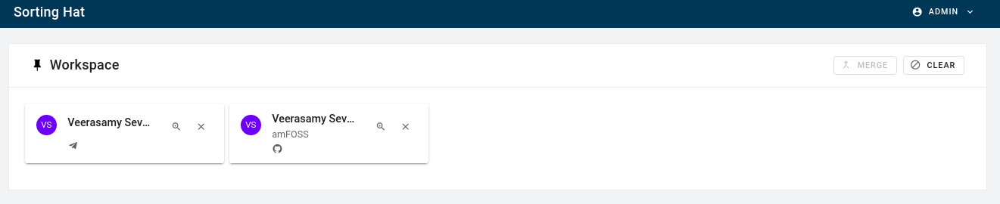
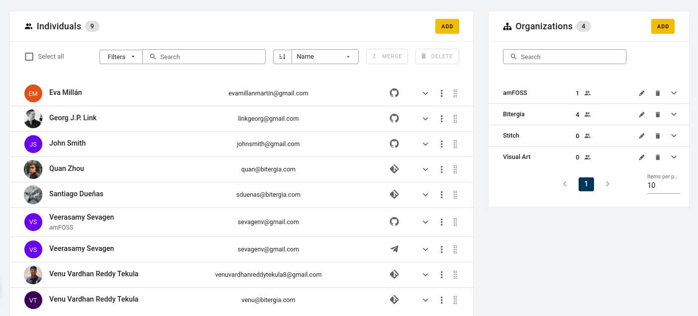

SortingHat’s new interface¶
As stated before, SortingHat’s is currently being revamped into a service and as a result, its user-interface has been improved as well.
Workspace is where you keep individuals on whom you want to perform some actions. This is in the case where you have numerous profile entries but need to perform some action on a few of them.
Individuals is, as the name suggest, where all the individual’s profiles are located. Information such as name, email, identities and affiliations can be found out from their respective profile.
Organisation is the list of affiliations than an individual can have.
 